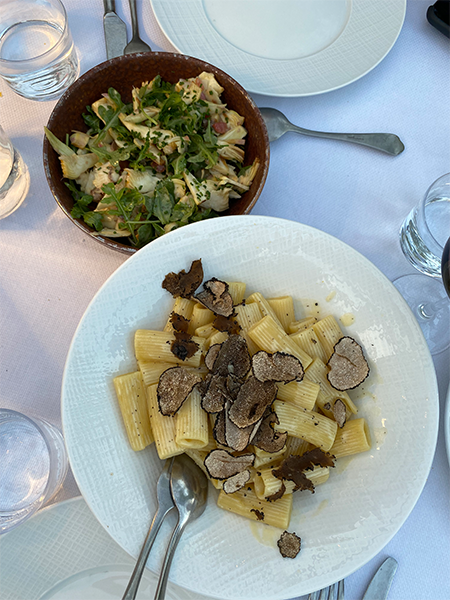
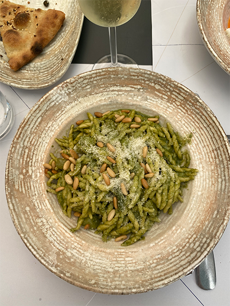
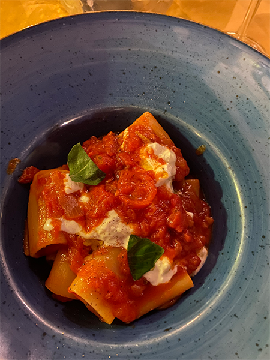
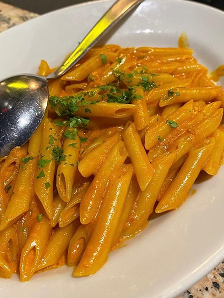
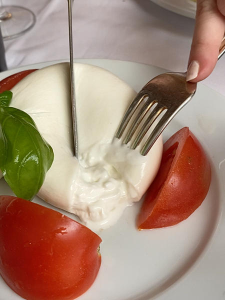
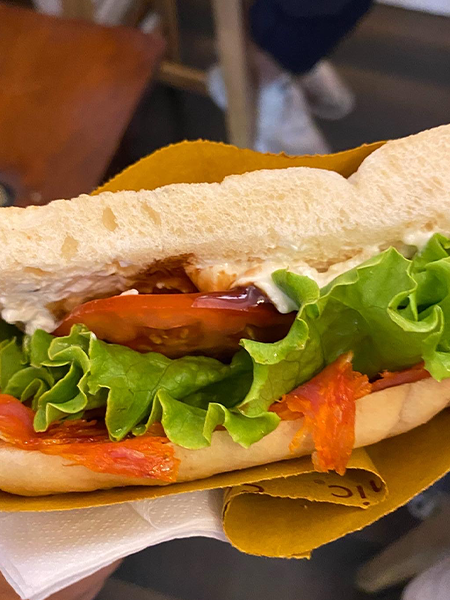
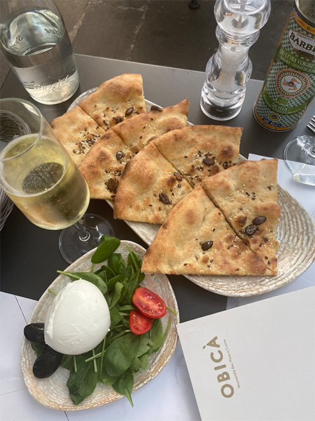
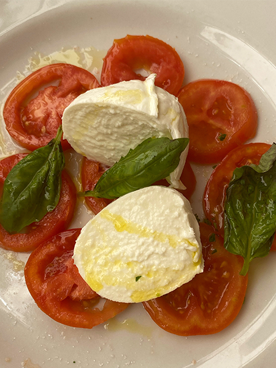
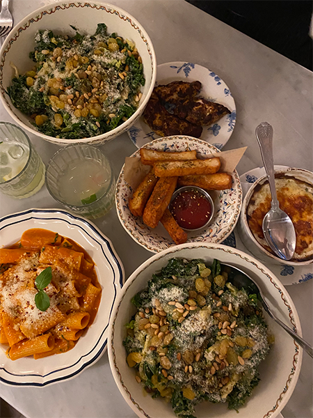
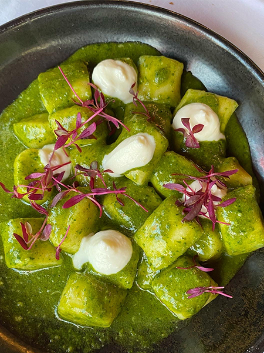

There is so much I could say about how amazing the food was in each city and how culturally rich each place was. The place with the best food does not come as a surprise; Florence. Every restaurant we went to each day offered the most amazing and fresh menu of pastas, meats, salads, pizzas, and wine. Did you know they don’t cut pizza pies for you in Italy??




Learning how to “operate” and handle ourselves in a foreign, non-English country was quite the learning curve for me and my best friend Regan, who I was abroad with. At the first café we walked into we were humbled very quickly, with stares and glances from strangers, only adding to our flustered behavior. This was sort of our point of realization that we would be experiencing culture shock long before any feelings of comfort and familiarity would arise.
By the end of week 2 Regan and I had the perfect system for meals. A bottle of wine to split, Caprese salad or burrata, and an order of bruschetta to start. Followed by our own pasta dishes. Having a fresh bowl of homemade pasta for only € 10 was unimaginable.
Photos of the food did not even do it justice. Everything down to the actual ingredients of the food and how it was made/processed truly is what made everything so perfect. The best burrata I have had, and I have had too many burrata for the average person in my day, was in Milan, Italy at a restaurant called A Santa Lucia
Another notable meal in Italy was at A La Vecchia Bettola. We were there with a big group of people and got amazing vodka sauce which was listed on the menu as their house sauce, as well as a gorgonzola pasta, ragu pasta, and risotto. I only have a photo of the vodka sauce because we cleared those plates too fast… shown in the photos above on the right.
The last amazing meal I want to highlight was at Obica. The restaurant had an amazing, modern atmosphere which is rare in Florence. It felt like I was back in New York City when I was eating there. Their pesto pasta (see above: second photo from the left) was so fresh, rich, and GREEN! Their flatbread and burrata was also amazing. This was super fun because I met up with an old friend from my hometown who I met in kindergarten. So, sharing a meal in Florence together was so surreal.




The last amazing meal I want to highlight was at Obica. The restaurant had an amazing, modern atmosphere which is rare in Florence. It felt like I was back in New York City when I was eating there. Their pesto pasta (see above: second photo from the left) was so fresh, rich, and GREEN! Their flatbread and burrata was also amazing. This was super fun because I met up with an old friend from my hometown who I met in kindergarten. So, sharing a meal in Florence together was so surreal.
A couple of our favorite lunch spots were Panini Toscani and Sandwichic. These were build your own panini shops. Panini Toscani offered an extremely immersive and unique experience. When we got in line, we were able to try different kinds of meats and cheeses we could have on our paninis. Sandwichic was sooo good we went almost every day. An oddly rewarding experience was actually being recognized one day when we walked into the panini shop because we would go so much!
United Kingdom


My Favorite restaurant in London was NAC in Mayfair. I do not think we knew what we were getting ourselves into when we decided to go here. It was in a very nice area of London, so it was very expensive but equally as amazing. We got burrata (of course), beet hummus (loved it because it was pink), and I got a super filling and refreshing kale salad.
We found that in London it was a bit harder to find super delicious restaurants, whereas in Italy we would walk past any restaurant on the side of the road and know we would be getting pristine food. However, it was refreshing being back in a city that felt more like the United States.
I would not call myself an extremely adventurous eater either. I loveeeee the food I know and feel very passionate about that, but you will never catch me eating a snail. So, it was difficult for my parents and I to find restaurants in France. My favorite eating experience was in Cannes. At the hotel we stayed at, there was an amazing Italian (of course) restaurant. I had the most amazing truffle pasta, and bruschetta for dinner.
Thank you for reading about my summer abroad! Those two months were completely eye-opening unforgettable, as I have made memories that I will cherish for the rest of my life. I hope you enjoy reading about it as much as I did writing about it all! xoxo, Nicole Pullano